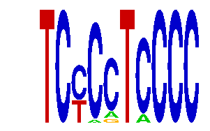

family_17 |
|---|
|  |
| Download PWM |
| Download instances (motifs) |
| Show motif distribution |
Query_ID | Query_Consensus | Subject_Name | Source_DB | Subject_ID | Length | Orientation | Offset | Divergence | Overlap | Subject_Consensus |
|---|---|---|---|---|---|---|---|---|---|---|
| family_17 | TCCCCTCCCC | MZF1_1-4 | JASPAR | MA0056.1 | 6 | reverse-complement | 5 | 0.494 | 5 | NGGGGA |
| family_17 | TCCCCTCCCC | GGGAGGRR | JASPAR | PF0024 | 8 | reverse-complement | 1 | 0.606 | 8 | GGGAGGGG |
| family_17 | TCCCCTCCCC | GGGTGGRR | JASPAR | PF0056 | 8 | reverse-complement | 6 | 0.802 | 4 | GGGTGGGG |
Sequence | Start_position (from start) | Start_position (from end) | Average conservation | Best conservation score | Instance_with_best_CS | Best_Z-score | Instance_with_best_ZS | Strand |
|---|---|---|---|---|---|---|---|---|
| chr15:36538708-36539708 | 746 | 756 | 0.0022 | 0.007 | TCYMCTCCCC | 15.005711 | TCYCMTCCCC | -1 |
| chr4:140977485-140978485 | 430 | 440 | 0.0471 | 0.15 | TCYCMTCCCC | 13.934273 | TCYCCTMCCC | -1 |
| chr7:135349261-135350261 | 610 | 620 | 0.5774 | 0.812 | TCYCMTCCCC | 13.893381 | TCYCCTCCCC | 1 |
| chr7:51737452-51738452 | 954 | 964 | 0.0048 | 0.008 | TCYCMTCCCC | 13.934273 | TCYCCTMCCC | 1 |
| chr11:114059629-114060629 | 645 | 655 | 0.0008 | 0.003 | TCYCMTCCCC | 12.862834 | TCYCCYCCCC | -1 |
| chr6:51420374-51421374 | 591 | 601 | 0.3084 | 0.423 | TCYCMTCCCC | 13.934273 | TCYCSTCCCC | 1 |
| chr4:109147253-109148253 | 234 | 244 | 0.0003 | 0.003 | TCYCCYCCCC | 15.005711 | TCYCMTCCCC | -1 |
| chr6:4287827-4288827 | 513 | 523 | 0.0036 | 0.005 | TCYCSTCCCC | 13.934273 | TCYCSTCCCC | -1 |
| chr3:144380494-144381494 | 989 | 999 | 0.1116 | 0.215 | TCYCMTCCCC | 15.005711 | TCYCMTCCCC | 1 |
| chr15:36538708-36539708 | 574 | 584 | 0.8655 | 0.985 | TCYCCTMCCC | 13.934273 | TCYCCTMCCC | 1 |
| chr2:154768406-154769406 | 769 | 779 | 0.0548 | 0.066 | TCYCMTCCCC | 12.862834 | TCYCCYCCCC | 1 |
| chr6:124869568-124870568 | 220 | 230 | 0.9047 | 1 | TCYMCTCCCC | 15.038796 | TCYMCTCCCC | 1 |
| chr6:124869568-124870568 | 225 | 235 | 0.805 | 0.994 | TCYCMTCCCC | 12.862834 | TCYCCYCCCC | 1 |
| chr1:166249387-166250387 | 390 | 400 | 0.0013 | 0.006 | TCYCSTCCCC | 13.934273 | TCYCSTCCCC | 1 |
| chr7:51729362-51730362 | 544 | 554 | 0.0226 | 0.053 | TCYMCTCCCC | 15.005711 | TCYCMTCCCC | 1 |
| chr19:43594664-43595664 | 671 | 681 | 0.0104 | 0.015 | TCYCMTCCCC | 13.893381 | TCYCCTCCCC | -1 |
| chr5:31208244-31209244 | 824 | 834 | 0.9984 | 1 | TCYCCTMCCC | 13.934273 | TCYCCTMCCC | -1 |
| chr7:134170729-134171729 | 355 | 365 | 0.0279 | 0.053 | TCYCSTCCCC | 15.005711 | TCYCMTCCCC | 1 |
| chr2:35115003-35116003 | 444 | 454 | 0.0011 | 0.003 | TCYCSTCCCC | 15.005711 | TCYCMTCCCC | 1 |
| chr9:31060620-31061620 | 559 | 569 | 0.0588 | 0.077 | TCYMCTCCCC | 15.005711 | TCYCMTCCCC | 1 |
| chr6:4495587-4496587 | 480 | 490 | 0.0004 | 0.001 | TCYCMTCCCC | 12.862834 | TCYCCYCCCC | 1 |
| chr10:128020236-128021236 | 126 | 136 | 0.0008 | 0.002 | TCYCMTCCCC | 13.934273 | TCYCSTCCCC | 1 |
| chr5:115964921-115965921 | 250 | 260 | 0.8995 | 1 | TCYCSTCCCC | 15.005711 | TCYCMTCCCC | -1 |
| chr13:114670382-114671382 | 378 | 388 | 0.459 | 0.785 | TCYCMTCCCC | 15.005711 | TCYCMTCCCC | 1 |